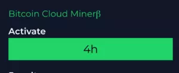

Le Bitcoin est une cryptomonnaie autrement appelée monnaie cryptographique. Dans le cas de la dénomination unitaire, on l'écrit « bitcoin » et, dans le cas du système de paiement pair-à-pair on l'écrit « Bitcoin ».
Pour en savoir plus sur le bitcoin, vous pouvez regarder cette vidéo :Dans un premier temps, il est impératif d’ouvrir un Bitcoin Wallet afin de miner la crypto monnaie leader. En effet, cette étape est primordiale pour la la détention et la sécurité de fonds fons numériques (BTC tokens).
Dans un deuxième lieu, il revient à l’investisseur de créer un compte sur une plateforme bitcoin cloud mining. De ce fait, il va falloir fournir vos informations personnelles suivantes :
En troisième lieu, c’est le moment de miner du bitcoin rentable. Cette intervient directement après l’ouverture de votre compte. Pour cela, vous devez cliquer sur l’onglet « Miner ». Au cas où la plateforme de mining accepte le minage sur mobile, vous pouvez le faire à partir de votre smartphone.
En dernier lieu, c’est bitcoin mining proprement dit. De toutes les façons, c’est le broker choisi, de préférence eToro, qui se charge de faire votre minage du BTC en toute tranquillité. En tout cas, l’investisseur se doit tout simplement de contrôler les opérations et de les renouveler tous les 4 heures.
En outre, vous recevez les revenus du minage toutes les 30 à 40 minutes. Dès lors, ces bénéfices peuvent servir à trader les actifs numériques sur la plateforme.